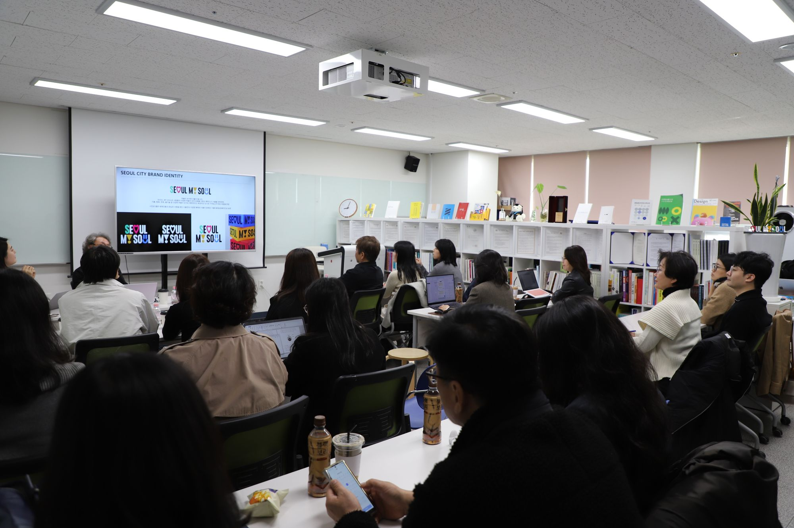

비전과 계획
공공의 이익, 협력적 사회, 지속 가능한 환경, 문화적 창조를 목표로 디자인을 통한 공공가치를 실현합니다.
공공가치 추구를 위한
4개 목표, 12개 핵심 지표
국제공공디자인포럼은 국제사회가 함께 정한 지속가능발전목표(SDGs)를 바탕으로 사회, 공동체, 환경, 삶, 문화 분야에서 우리가 마주한 문제의 대안을 함께 찾고 디자인으로 해결하고자 합니다. ‘사회를 위한 공공디자인, 함께하는 공공디자인’을 의제로 4개 목표와 12개 핵심 지표를 세우고 공공의 삶의 질 향상을 위해 노력합니다.
공공편의Public Convenience
- 1Safety
- 2Universal
- 3Affordable
협력사회Cooperative Society
- 4Equality
- 5Network
- 6Community
환경지속Sustainable Environment
- 7Net Zero
- 8Ecology
- 9Biophilic
문화창조Creative Culture
- 10Human
- 11Diversity
- 12Impact
외교, 문화, 교육, 학술 분야의
비영리 활동
거버넌스, 연구와 실천, 문화 창조, 삶의 질 증대, 공익 추구를 가치로 삼아 네 분야에서 활동합니다.

외교 분야
국제 공공디자인 연합 포럼 개최
매년 한 차례 회원국을 돌며 국제공공디자인포럼을 엽니다. 서울, 선양, 시안, 도쿄에서 각국 전문가가 공공디자인의 의미와 가능성을 논의해 왔습니다.

문화 분야
공공디자인 문화 운동 실천
국제 파킹데이, 공공디자인 페스티벌처럼 시민이 직접 공공공간을 경험하는 문화 운동으로 공공디자인의 가치를 넓힙니다.

교육 분야
공공디자인 교육 프로그램 운영
세미나와 특강, 워크숍을 통해 다음 세대 공공디자이너와 연구자를 기르고 각국의 사례와 방법론을 나눕니다.

학술 분야
국제 공공디자인 교류전 개최
연구 성과와 프로젝트를 교류전과 자료집으로 공유하고, 공공디자인의 학술적 기반을 함께 다집니다.
사회를 위한 공공디자인
공공안전, 공공배려, 공공협력, 공공편의의 가치와 이를 실현하는 국제 프로젝트입니다.
공공안전Public Safety
유무형 가치의 개선을 통한 안전 증대
안전한 도시만들기 국제세미나
안전한 도시를 만들기 위한 연합 세미나
공공배려Public Inclusiveness
모두를 위한 사용자 중심의 배려
더 나은 세상을 위한 공유공간 만들기
국제 네트워크 봉사, 개발도상국 공공환경 개선
공공협력Public Cooperation
협력 체계 구성을 통한 사회문제 해결
콜렉티브 임팩트 국제캠프
국제 리더 그룹과 시민의 소통, 해커톤을 통한 문제 해결
공공편의Public Convenience
모두의 편의를 위한 개선 방안
길찾기 쉬운 아시아
읽기 쉽고 걷기 편한 아시아 연합 안내체계 디자인 개발
함께하는 공공디자인
공공품격, 공공소통, 공공혁신, 공공서비스의 가치와 이를 실현하는 국제 프로젝트입니다.
공공품격Public Dignity
도시 이미지와 환경 개선
아시안 도시브랜드 시상식
아시아 곳곳의 도시가 가진 공공가치를 찾아 수여하는 시상식
공공소통Public Communication
참여를 통한 공공가치 실현과 문제 발견, 해결
공공디자인 콘텐츠
더 좋은 사회를 만들기 위한 영상 콘텐츠 공모전
공공혁신Public Innovation
새롭고 다양한 시도를 통한 개선과 변화
사회혁신을 위한 글로벌 타운
현장에 머물며 문제를 발굴하고 해결 모델을 개발
공공서비스Public Service
공공영역의 편의와 문제 개선을 위한 프로세스와 계획
모두를 위한 기초자료 공유
인지, 행동심리 관측과 비교 분석을 위한 교류의 장
공공디자인은 세계 곳곳에서 새로운 문화를 창조하고
인류의 삶의 질을 높이는 중추적인 역할을 해 나갈 것입니다.